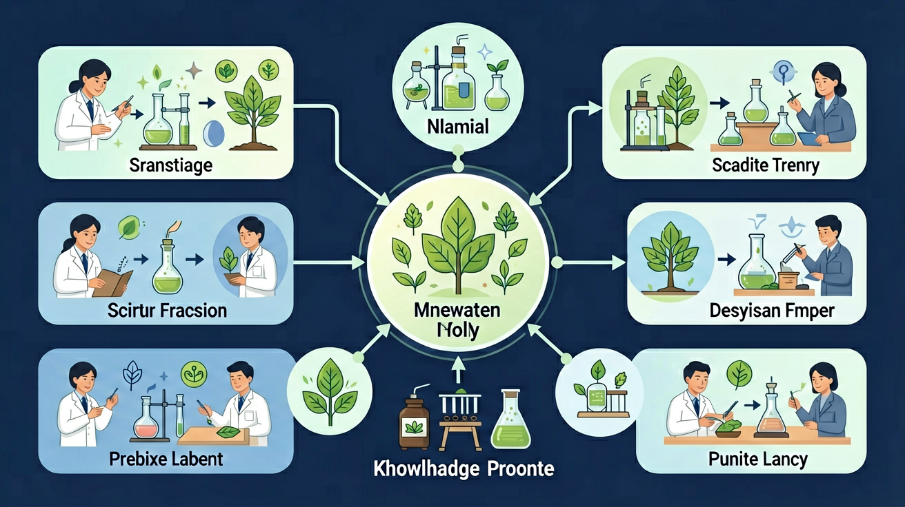
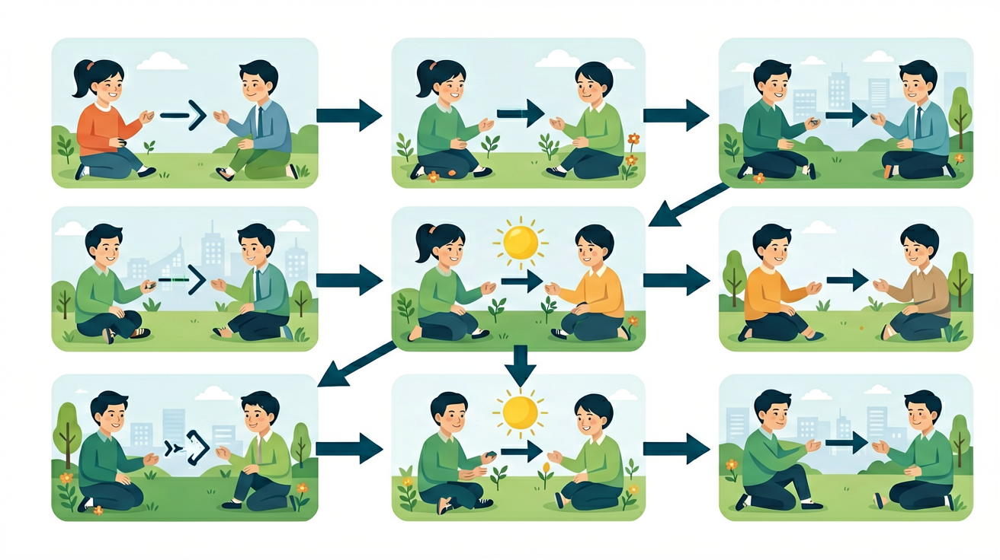
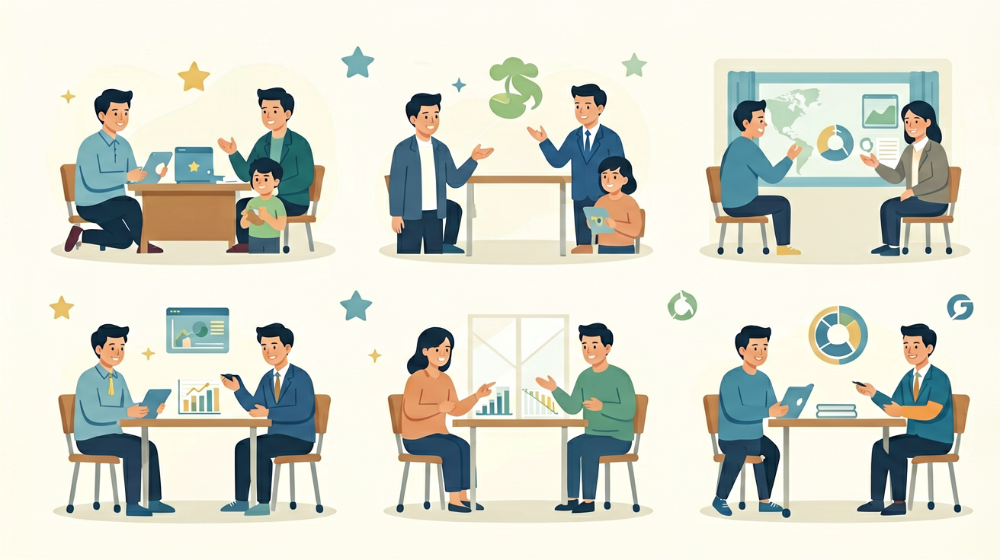

小学科学 · 六年级 · 生命科学

「种瓜得瓜，种豆得豆」描述的是生物的什么现象？
能用生活实例说明遗传现象（孩子像父母），说出遗传是亲代特征传递给子代。
能用生活实例说明变异现象（亲代与子代、兄弟姐妹之间的差异）。
能区分遗传与变异，并说出两者共同造就生物多样性。
先选一个你最关心的问题，带着它开始今天的探究（点一下即可选中）：
【And · 已经知道】猫妈妈生的小猫咪，长得和猫妈妈很像；你也一定听过别人说"你长得真像你爸爸/妈妈"。
【But · 问题来了】为什么父母的特征会"跑"到孩子身上？这份看不见的信息是怎么传递的？
【Therefore · 所以要学】弄清楚"遗传"是怎么回事，你就能解释一家人为什么相像。
遗传是指：亲代（父母）的特征通过遗传信息传递给子代（孩子）的现象。所以孩子会和父母有相似的特征——注意是"相似"，不是"完全相同"。

每个孩子的身体里都有一本来自父母的"生命说明书"（遗传信息），上面写着"眼睛长什么样、头发什么颜色"。这本说明书一半来自爸爸、一半来自妈妈，所以孩子会同时像两个人。
遗传传递的是特征信息，不是把父母的样子直接复印。所以"像"是相似而不是相同——这一点马上会在"变异"部分用到。
观察画布上出现的特征卡片，点击 🧬 遗传 或 🧪 变异 按钮进行分拣。分对得 1 分，全部 8 张分完看成绩！
【And · 已经知道】遗传让孩子和父母相似。
【But · 问题来了】那为什么同一对爸妈生的孩子，长相、身高、性格却不完全一样？
【Therefore · 所以要学】这就是"变异"要回答的问题。
变异是指：亲代与子代之间、以及同一亲代的子代个体之间存在的差异现象。世界上没有两个完全相同的人（同卵双胞胎也几乎总有细微差别）。

遗传信息在复制和传递时，会发生微小的随机变化，就像抄写一本书时偶尔会抄错一两个字。再加上爸爸和妈妈的说明书"各取一半"的组合方式每次都不同，所以每个孩子都不一样。
变异让生物更多样。环境变化时，总有一些个体碰巧更适应——它们活下来并把特征传给后代。变异是生物适应环境、不断进化的原材料。
| 比较项目 | 🧬 遗传 | 🧪 变异 |
|---|---|---|
| 含义 | 亲代特征传递给子代（相似） | 亲代与子代、子代个体间的差异 |
| 原因 | 遗传信息从父母传给孩子 | 遗传信息复制时发生微小变化 + 信息重新组合 |
| 例子 | 眼睛像妈妈、脸型像爸爸 | 同一窝小狗毛色不同 |
| 作用 | 让物种特征保持稳定 | 让生物多样，为进化提供原材料 |
| 关键词 | "像"、"相似" | "不同"、"独特" |
✅ 纠正：遗传是相似，不是相同。说明书一半来自爸爸一半来自妈妈，组合过程中还有变化，所以没人是父母的"复印件"。
💡 错因：把"传递特征"误当成"复制整体"。
✅ 纠正：变异是自然界最普遍的现象，本身没有好坏之分。正是变异带来生物多样性，为进化提供原材料。
💡 错因：把日常口语中"变异=异常"的负面含义带进了科学概念。
✅ 纠正：说话口音、写字好坏、晒黑的皮肤、练出的肌肉——这些是出生后学会或受环境影响形成的，不写在生命说明书里，不会遗传给下一代。
💡 错因：只看"父母会、孩子也会"的表面相似，没分清"天生"还是"学会"。
袁隆平爷爷和团队利用遗传和变异的原理：先寻找具有优良变异（穗大、抗病）的水稻植株，再通过杂交把这些优良特征稳定地遗传下去，培育出高产水稻，让更多人吃饱饭。
人们长期挑选具有想要特征的个体繁殖（温顺的性格、好看的毛色），一代代强化，培育出金毛、哈士奇、泰迪等各种狗狗品种。
不是！变异让生物更多样化，更能应对环境变化。遗传保持稳定，变异带来可能——两者合作，才有了丰富多彩的生命世界。
And：学生知道孩子和父母长得像
But：不明白为什么有的特征像，有的不像
Therefore：帮学生理解遗传的规律性
遗传是父母把特征传给孩子的现象，就像复印机复印文件。比如双眼皮是显性遗传，如果父母都是双眼皮，孩子有75%概率也是双眼皮（假设父母基因都是Aa型）。但遗传不是完全复制，就像复印文件时偶尔会有点小模糊。
🌍 看看班里同学：小明的酒窝和爸爸一模一样，这是遗传；但小明的头发比爸爸卷，这是遗传中的小变化。
下列哪个一定是遗传现象？
小朋友们，你们玩过乐高积木吗？DNA就像一套神奇的生物积木！每个细胞里都藏着46条像扭扭棒一样的染色体，上面串着约2万个基因——这些就是决定你长什么样的"配方手册"。遗传就像用同一套积木说明书搭出相似模型：爸爸妈妈各自给你23条"积木图纸"，所以你会像他们，但又有新组合。你想想，家里兄弟姐妹为什么像又不像？因为每次"抽积木"都是随机组合呀！
生活实例：观察小区里的流浪猫家族，白猫妈妈可能生出玳瑁色小猫，因为猫爸爸的基因就像不同颜色的积木块混搭进来了。下次吃玉米时留意，有的颗粒黄有的白，那是因为每颗玉米粒也像抽盲盒一样随机组合了父母基因~
还记得《X战警》里的变种人吗？现实中真有类似的"基因打字错误"叫突变。当细胞复制DNA时，偶尔会像抄写员犯困抄错字——可能把G写成C，或者整段漏抄。大多数错误会被修正，但有些会留下来：比如北极熊的"抗冻基因"就是突变来的！说白了这个意外错误反而帮了大忙。突变像抽盲盒，可能是好的（抗病小麦）、坏的（遗传病），或中性（单双眼皮）。
生活实例：所有香蕉最初都有硬籽，500年前一株香蕉树发生突变变成无籽香蕉，被人类发现后专门种植，现在我们吃的香蕉都是它的"后代"！超市里的无籽西瓜也是科学家用突变培育的，不用吐籽超方便~
知道吗？你早餐吃的面包、喝的牛奶都是人类"定制"的遗传变异！1万年前，小麦只是野草，人类发现某些突变株穗大不掉粒，就专门种它们。年复一年，这些"好突变"被积累起来——这叫人工选择。就像玩游戏时只培养最强宠物，现在的哈巴狗祖先居然是威风的狼！变异提供素材，人类当评委，狗狗变得越来越呆萌。
生活实例：超市蔬菜区就是"人类驯化成果展"：紫色的花椰菜、迷你胡萝卜、无核柑橘...玉米的祖先大刍草每株只有10粒，现在玉米能结500粒！下次吃草莓蘸糖时想想，野草莓只有指甲盖大，是200年优选才变成现在多汁的模样~
先独立作答，再点选项查看对错与错因。
下列哪项最能说明'变异'现象？
校园里两株同品种月季开花时间不同，最可能因为：
关于'可遗传变异'的正确描述是：
同一对父母生的孩子指纹不同，这是____现象；孩子与父母都有耳垂，这是____现象。（填'遗传'或'变异'）
答案：变异,遗传
前者体现个体差异，后者体现亲代特征传递
将同一株草莓的匍匐茎分别种在阳台和地下室，果实甜度不同主要是由____引起的变异。（填'环境'或'遗传'）
答案：环境
光照等外部条件影响果实发育
测量同一批豌豆种子在不同光照条件下的生长数据